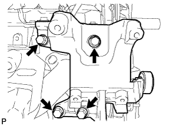
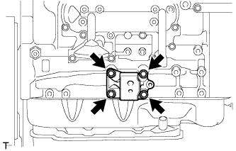
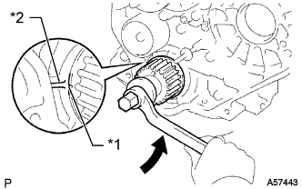
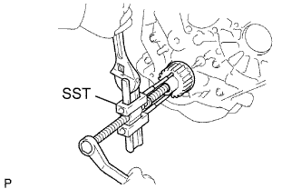
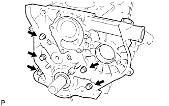

МАСЛЯНЫЙ НАСОС > СНЯТИЕ |
| 1. REMOVE ENGINE ASSEMBLY |
Remove the engine (See page Нажмите здесь).
| 2. REMOVE NO. 1 COMPRESSOR MOUNTING BRACKET |
|  |
Remove the 4 bolts and compressor mounting bracket.
| 3. REMOVE TIMING BELT |
Remove the timing belt (See page Нажмите здесь).
| 4. REMOVE INJECTION PUMP ASSEMBLY |
Remove the injection pump (See page Нажмите здесь).
| 5. REMOVE WATER OUTLET HOUSING |
 |
Remove the 3 bolts, outlet housing and gasket.
| 6. REMOVE WATER BY-PASS HOSE UNION |
Remove the water by-pass hose union.
| 7. REMOVE PUMP BRACKET |
 |
Remove the 3 bolts and pump bracket.
| 8. REMOVE NO. 1 FRONT ENGINE MOUNTING BRACKET RH |
|  |
Remove the 4 bolts and engine mounting bracket.
| 9. REMOVE NO. 1 FRONT ENGINE MOUNTING BRACKET LH |
 |
Remove the 4 bolts and engine mounting bracket.
| 10. REMOVE NO. 1 GENERATOR BRACKET |
 |
Remove the 3 bolts and No. 1 generator bracket.
| 11. REMOVE CAMSHAFT TIMING PULLEY |
|  |
Using the crankshaft pulley bolt, turn the crankshaft 90° counterclockwise and align the timing mark of the crankshaft timing pulley with the protrusion of the timing belt case.
 | Turn |
| *1 | Timing Mark |
| *2 | Protrusion |
 |
Using SST, loosen the pulley bolt.
Using SST, separate the timing pulley from the camshaft.
Remove the pulley bolt and timing pulley.
Remove the timing pulley woodruff key.
| 12. REMOVE NO. 2 TIMING BELT COVER |
Remove the 4 bolts and timing belt cover.
| 13. REMOVE WATER PUMP ASSEMBLY |
 |
Remove the 6 bolts and tension spring bracket.
Remove the water pump and gasket.
| 14. REMOVE NO. 1 TIMING BELT IDLER SUB-ASSEMBLY |
Remove the 2 bolts (A and B).
Loosen the bolt (C), and remove the No. 1 timing belt idler.
| 15. REMOVE NO. 2 TIMING BELT IDLER SUB-ASSEMBLY |
Remove the bolt, No. 2 timing belt idler and spacer.
| 16. REMOVE CRANKSHAFT TIMING PULLEY |
|  |
Using a screwdriver, remove the crankshaft timing pulley.
| 17. REMOVE OIL PAN SUB-ASSEMBLY |
Remove the 16 bolts and 2 nuts.
 |
Insert the blade of an oil pan seal cutter between the oil pan and cylinder block, cut off the applied sealer and remove the oil pan.
| 18. REMOVE OIL STRAINER SUB-ASSEMBLY |
Remove the 2 bolts, 2 nuts, oil strainer and gasket.
| 19. REMOVE TIMING BELT CASE SUB-ASSEMBLY |
|  |
Remove the 5 bolts, timing belt case and gasket.
| 20. REMOVE FRONT CRANKSHAFT OIL SEAL |
 |
Using a screwdriver, pry out the oil seal.